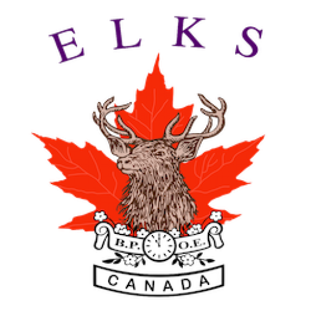
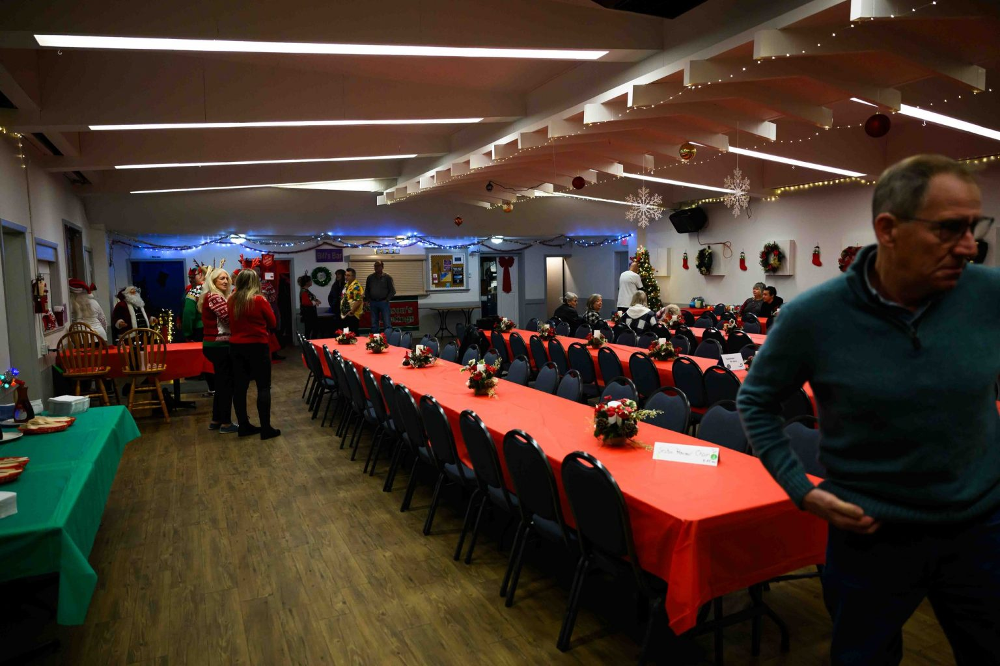
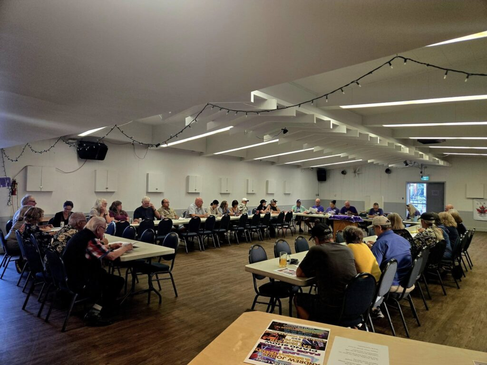

Adhésion
Partagez vos idées. Rencontrez vos voisins. Contactez la loge pour savoir comment devenir membre.
Demande d’adhésion (anglais)
Vernon ElksLODGE No. 45VERNON, COLOMBIE-BRITANNIQUE · DEPUIS 1920
Vous avez votre place ici. Depuis plus d’un siècle, Vernon Elks no 45 rassemble les gens du quartier pour échanger, célébrer et contribuer à la vie locale.

PLUS D’UN SIÈCLE D’ENGAGEMENT
Nous sommes des voisins, des bénévoles et des amis qui souhaitent améliorer la vie de leur communauté. Depuis 1920, Vernon Elks no 45 fait partie de l’histoire de la ville.
Membre des Elks du Canada, notre loge fait vivre une idée simple : ensemble, nous pouvons faire une différence. Pour faire du bénévolat, adhérer ou réunir vos proches, commencez ici.
Trouvez votre place parmi nous
3103 – 30TH STREETUNE PLACE POUR VOS BEAUX MOMENTS
Un anniversaire à célébrer. Un mariage mémorable. Une réunion qui rassemble. Donnez vie à votre événement au 3103, 30th Street, au cœur de Vernon.
La capacité dépend de l’aménagement et de l’espace de danse. Consultez la loge pour les tarifs, les disponibilités, le service traiteur et les conditions de location.
PLUSIEURS FAÇONS DE PARTICIPER
Partagez vos idées. Rencontrez vos voisins. Contactez la loge pour savoir comment devenir membre.
Demande d’adhésion (anglais)Découvrez la procédure de demande de soutien et renseignez-vous sur la prochaine période de dépôt.
Demande de soutien (anglais)Découvrez les activités de la loge, dont le Mega Meat Draw. Confirmez les dates avant votre visite.
Voir les activités (anglais)QUELQUES QUESTIONS UTILES
Appelez le 250-549-1883 et laissez un message détaillé avec la date, le nombre d’invités et vos projets. La loge vous aidera à confirmer la disponibilité et l’aménagement.
Un service traiteur est proposé sur demande. Discutez du menu et de vos besoins avec la loge. Les conditions publiées demandent une confirmation au moins 14 jours à l’avance.
Ouvrez la demande d’adhésion ci-dessus ou contactez la loge pour obtenir des renseignements sur les démarches et les possibilités de participation.
Consultez le lien vers les activités ci-dessus ou contactez la loge. Les horaires peuvent changer : confirmez les renseignements avant de vous déplacer.
FAISONS CONNAISSANCE
Un événement à organiser ? Envie de devenir membre ? Écrivez-nous ou appelez la loge.
NOUS TROUVER À VERNON
Vernon Elks #45
3103 – 30th Street
Vernon, BC V1T 5E3
Pour la salle, merci de laisser un message détaillé. Confirmez auprès de la loge les langues de service disponibles.